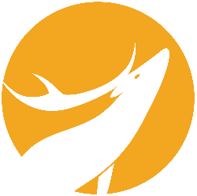

<ion-header>
  <ion-navbar>
    <ion-title>
      A propos de nous
    </ion-title>
  </ion-navbar>
</ion-header>

<ion-content class="background-img">
  <ion-content class="about">
      <h2>Ce projet a été réalisé par</h2>
      <ion-card>
          <ion-card-header>
            Yves
          </ion-card-header>
          <ion-card-content>
              <button ion-button icon-start round color="danger"><ion-icon name="logo-github"></ion-icon><a href="https://github.com/Axielles">Github</a></button>
              <button ion-button icon-start round color="danger"><ion-icon name="logo-linkedin"></ion-icon><a href="https://www.linkedin.com/in/yvesbargain/">LinkedIN</a></button>
          </ion-card-content>
        </ion-card>

        <ion-card>
            <ion-card-header>
              Saïda
            </ion-card-header>
            <ion-card-content>
                <button ion-button icon-start round color="danger"><ion-icon name="logo-github"></ion-icon><a href="https://github.com/saidaZgl">Github</a></button>
              <button ion-button icon-start round color="danger"><ion-icon name="logo-linkedin"></ion-icon><a href="https://www.linkedin.com/in/sa%C3%AFda-zghal/">LinkedIN</a></button>
            </ion-card-content>
          </ion-card>

          <ion-card>
              <ion-card-header>
                Julienne
              </ion-card-header>
              <ion-card-content>
                  <button ion-button icon-start round color="danger"><ion-icon name="logo-github"></ion-icon><a href="https://github.com/Julienne-M">Github</a></button>
                  <button ion-button icon-start round color="danger"><ion-icon name="logo-linkedin"></ion-icon><a href="https://www.linkedin.com/in/julienne-matias-7b2641171/">LinkedIN</a></button>
                </ion-card-content>
            </ion-card>
            <h2>Et un énorme merci à la Wild Code School pour son soutien !</h2>
            <a class="wild" href="https://wildcodeschool.fr/"></a>
  </ion-content>
</ion-content>

<ion-footer>
  <ion-toolbar>
    <p>A TRICK or a TREAT ?</p>
  </ion-toolbar>
</ion-footer>